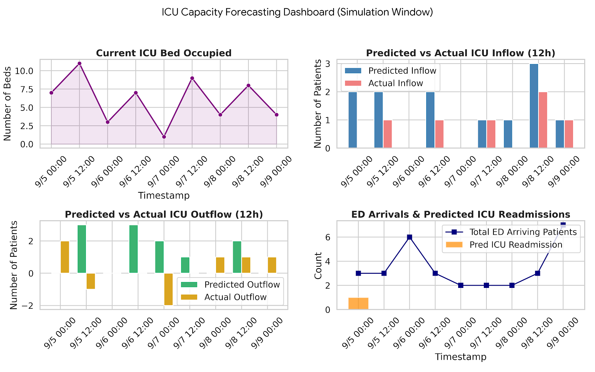

healthcare analytics case study
Bridging the Gap: Forecasting ICU Demand and Readmission Risk

Overview / Description
Emergency department crowding and ICU strain are major hospital operational challenges. Patients who appear stable in the ED can deteriorate quickly, while patients discharged too early from ICU may face dangerous readmission risk.
This project analyzed the MIMIC-IV EHR database across the full patient journey, from ED triage to ICU admission, discharge, and potential readmission, to build a unified framework for real-time ICU bed demand forecasting.
Objective / Success Metrics
- Early deterioration detection: Predict ICU admission within 12 hours of ED arrival.
- Safe discharge assessment: Predict ICU readmission within 72 hours.
- Unified forecasting: Support dynamic ICU bed demand planning.
Approach
1) Data integration & cohort selection
- Joined
ed_stays,admissions,transfers,icustays. - Built upstream and downstream cohorts.
2) Feature engineering
- Mapped 1,000+ drugs into 22 categories.
- Standardized pain scores and chief complaints.
3) Modeling
- XGBoost with imbalance handling.
- Optimized for AUC and Recall.

Results / Key Findings
Model 1: 12-Hour ICU Admission
AUC: 0.96 | Recall: 0.93
Successfully captured high-risk ICU patients early.
Model 2: 72-Hour ICU Readmission
AUC: 0.72 | Recall: 0.52
Provided useful signal for discharge risk screening.
Impact / Conclusion / Recommendations
- Built a 12-hour ICU demand dashboard.
- Shifted from patient-level to system-level insights.
- Improved planning for ICU capacity and safety.
Future: integrate length-of-stay models and time-series clinical data.